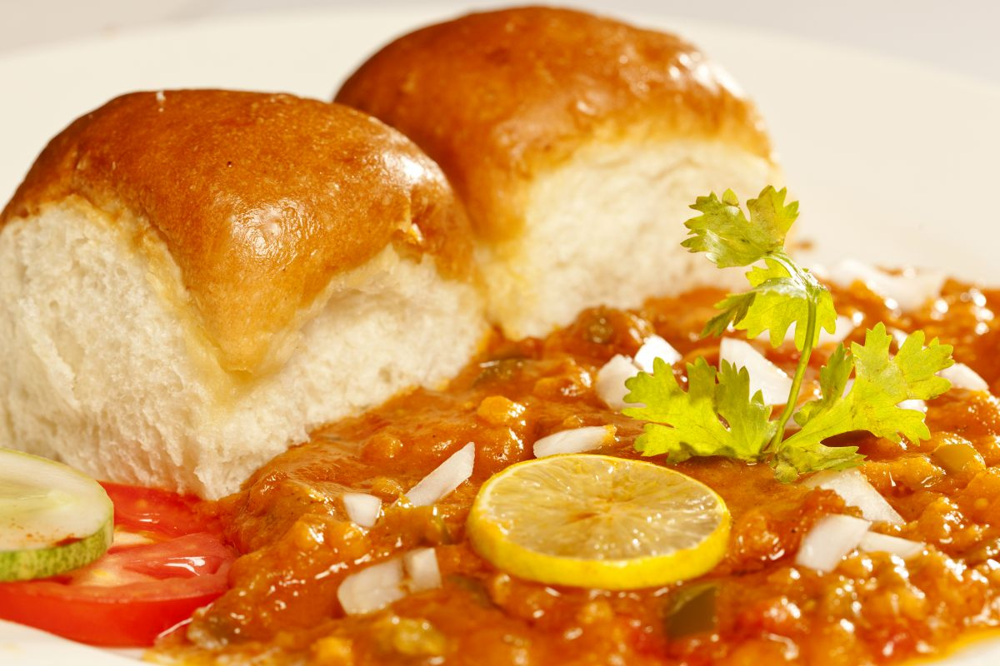

Pav Bhaji

Ingredients
- 4 Pav (bread rolls)
- 2 cups mixed vegetables (potato, peas, carrot, etc.)
- 1 onion, chopped
- 1 tomato, chopped
- 2 tbsp Pav Bhaji masala
- Butter
- Fresh coriander for garnish
Instructions
- Boil the mixed vegetables (potatoes, peas, carrots) until soft. Drain and mash them in a bowl.
- In a large pan, heat 2 tbsp of butter over medium heat. Add chopped onions and sauté until translucent.
- Add the chopped tomatoes and cook until they are soft and mushy.
- Stir in the mashed vegetables and mix well.
- Add 2 tbsp of Pav Bhaji masala and salt to taste. Mix thoroughly and let it cook for about 5-7 minutes, stirring occasionally.
- In a separate pan, heat some butter and toast the Pav until golden brown on both sides.
- Serve the hot Bhaji with buttered Pav, garnished with fresh coriander and lemon wedges.
Back to Recipes